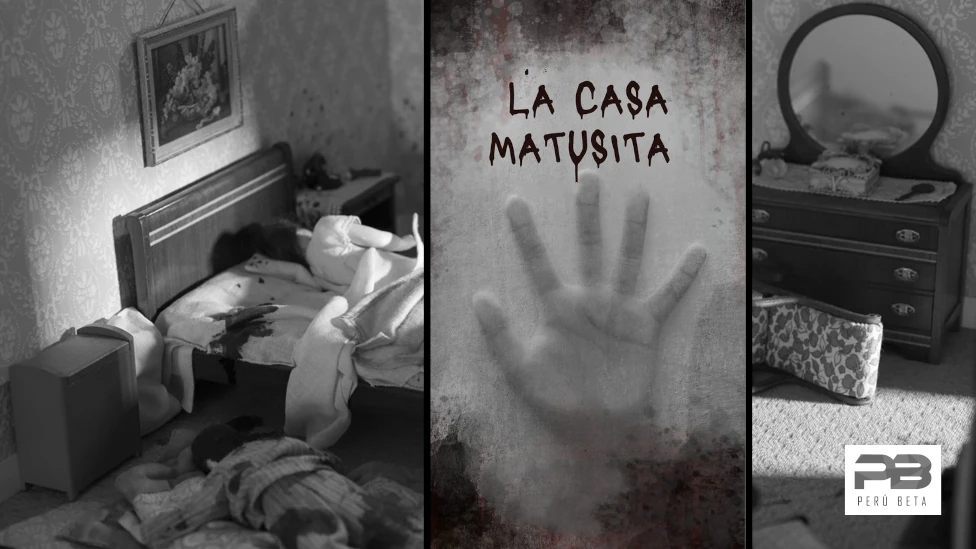
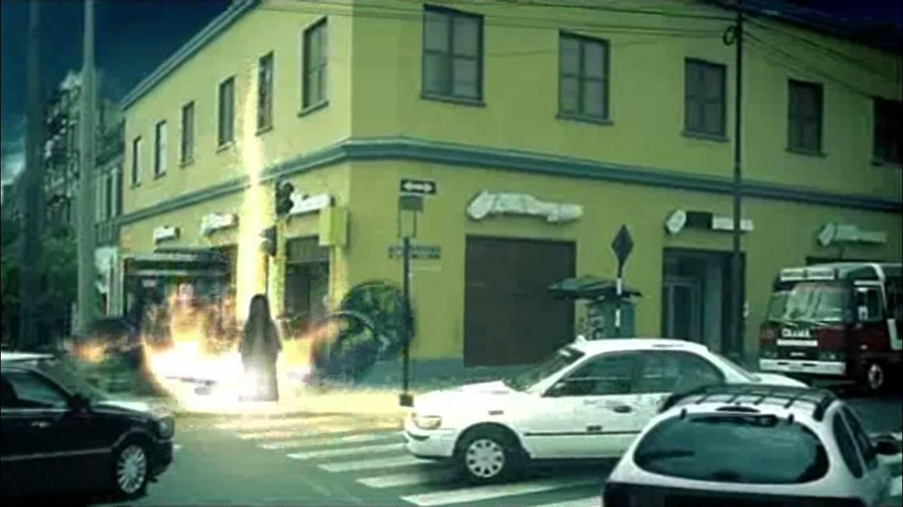

La Casa Matusita
La Casa Matusita es una de las leyendas más aterradoras y populares de Lima, Perú. Se trata de una casa ubicada en una calle tranquila de la capital, pero que guarda una historia macabra y aterradora. La leyenda se ha transmitido durante generaciones, y la casa se ha convertido en un lugar misterioso y temido por los limeños.

La historia comienza con una mujer llamada Matusita, una joven que vivía en esa casa con su esposo. Según algunas versiones de la leyenda, Matusita era una mujer muy celosa y posesiva, que no soportaba que su marido tuviera contacto con otras mujeres. La tensión en la relación aumentó cuando Matusita descubrió que su esposo le era infiel con una joven vecina.
En un ataque de celos y desesperación, Matusita decidió vengarse de su esposo y su amante. Una noche, mientras él dormía, ella lo mató de manera brutal, y luego también asesinó a la amante, envenenándola o ahorcándola, según las diferentes versiones de la leyenda.
Tras cometer estos crímenes, Matusita, presa del remordimiento y la locura, terminó con su propia vida colgándose en uno de los cuartos de la casa. En ese momento, su alma quedó atrapada en el lugar, condenada a una eternidad de sufrimiento por sus actos. Se dice que su espíritu, marcado por la furia y el dolor, nunca pudo descansar en paz.
Desde la muerte de Matusita, comenzaron a suceder cosas extrañas en la casa. Los vecinos que vivían cerca afirmaban escuchar ruidos extraños provenientes de la casa: susurros, gritos de angustia, y el sonido de una mujer llorando desconsolada durante la noche. También se decía que las luces se apagaban y encendían solas, y las puertas se cerraban violentamente sin motivo alguno.
Con el paso del tiempo, la casa quedó abandonada, pero las historias sobre lo que ocurría en su interior siguieron circulando. Se decía que cualquier persona que se atreviera a entrar en la Casa Matusita experimentaba fenómenos paranormales y veía apariciones fantasmales. En algunas versiones de la leyenda, quienes intentaban ingresar a la casa no solo escuchaban ruidos extraños, sino que eran acosados por la figura espectral de Matusita, quien aparecía como una mujer desfigurada y furiosa, dispuesta a vengarse de los vivos.
Hoy en día, la Casa Matusita sigue siendo un símbolo del miedo en Lima. Aunque la casa ha sido restaurada y remodelada varias veces a lo largo de los años, las historias sobre su embrujamiento persisten. Se dice que aún existen personas que, por curiosidad o valentía, se atreven a acercarse a la casa, especialmente en la oscuridad de la noche, pero siempre con el temor de encontrarse con el espíritu de Matusita.
La Casa Matusita se ha convertido en un lugar de culto para los amantes del misterio y el terror, quienes la consideran uno de los sitios más embrujados de Lima y, sin duda, una de las leyendas de terror más populares de Perú.
🔙 Volver